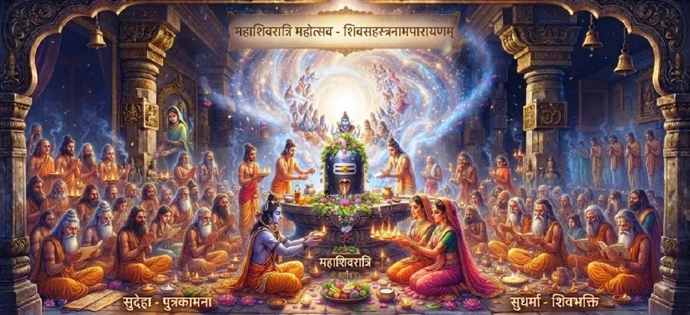

The Observance of Maha Shivaratri
The thirty-ninth chapter of the Kotirudra Samhita outlines the meticulous rules, fasting protocols, and ritual worship procedures required for observing Maha Shivaratri.
This chapter serves as a comprehensive guide for devotees seeking to perform the sacred vrata with precision and utmost devotion.
Chapter 39 Highlights
Sacred Vrata
The foundational rules of the Shivaratri fast.
Four Prahars
Worship rituals across the four watches of the night.
Night Vigil
Maintaining wakefulness through prayer and chanting.
Sacred Offerings
Bael leaves, water, milk, and panchamrita.
Mantra Chanting
Immersing the mind in the Panchakshara mantra.
Proper Parana
Breaking the fast at the designated auspicious time.
Core Topics in This Chapter
Rules and Protocols of the Vrata
The observance begins with taking a solemn resolve (sankalpa) on the Chaturdashi day. The devotee vows to maintain physical and mental purity throughout the day and night.
Fasting is observed with complete dedication, abstaining from heavy foods.
Worship Across the Four Prahars
The night is divided into four watches (prahars), each spanning approximately three hours. Detailed worship, abhisheka, and offering of bilva leaves are prescribed for every single watch.
This continuous cycle of worship keeps the devotee deeply absorbed in divine consciousness.
Abhisheka and Sacred Offerings
Different substances such as water, milk, curd, honey, and ghee are used sequentially for the abhisheka of the Shiva Linga during the four prahars, accompanied by sacred chants.
Each offering purifies a different layer of the seeker's subtle body.
Significance of Night Vigil (Jagaran)
Staying awake through the night (jagaran) is a cornerstone of Maha Shivaratri. It symbolizes conquering inertia and sleep, keeping the inner lamp of awareness burning bright.
The hours are spent chanting mantras and listening to sacred lore.
Concluding the Vrata (Parana)
The fast is successfully concluded (parana) after sunrise on the following day, following proper worship and offering food to deserving recipients or brahmins.
This seals the spiritual merits accumulated through the night.
Transition to Chapter 40
Having established the rituals and rules of observance, the narrative transitions to Chapter 40 to elaborate on the supreme merit and fruits gained from this sacred vrata.
Readers are invited to continue to Chapter 40.
Key Teachings of Chapter 39
Precise Rules
Following prescribed protocols for maximum spiritual benefit.
Four-Watch Worship
Engaging in continuous devotion across all night watches.
Bilva Leaves
Offering sacred leaves with love and pure intent.
Vigilance (Jagaran)
Overcoming sleep to keep consciousness luminous.
Sacred Abhisheka
Cleansing the Linga with milk, honey, and sacred water.
Mindful Parana
Concluding the fast gracefully after sunrise.
Spiritual Reflection
Chapter 39 reminds us that spiritual transformation requires discipline, focus, and heartfelt participation. The observance of Maha Shivaratri is not merely a traditional routine, but a profound spiritual technology designed to awaken our inner divinity. By fasting, staying awake, and offering our full attention to Mahadeva through the four watches of the night, we burn away spiritual lethargy and align our individual consciousness with the infinite reality of Shiva. May the structured guidelines of this sacred chapter inspire us to approach Maha Shivaratri with reverence, transforming the night into a profound gateway of liberation.
Living the Message of Chapter 39
Prepare for Maha Shivaratri with mindfulness, ensuring your body and mind are attuned to the sacredness of the vow.
Participate fully in the night vigils and abhisheka, treating every ritual as an offering of your ego to the Supreme.
Let the discipline of the fast purify your heart and draw you closer to Lord Shiva.
Key Spiritual Concepts
The supreme sacred vow dedicated to Lord Shiva.
A three-hour division of the night used for structured worship.
Remaining awake through the night in prayer and remembrance.
The fourteenth lunar day designated for the sacred observance.
The ceremonial breaking of the fast after sunrise.
The solemn vow and intention taken before starting the vrata.
Chapter Summary
Kotirudra Samhita Chapter 39 provides detailed instructions for observing Maha Shivaratri. It outlines the rules of fasting, the four-watch (prahar) worship schedule, the significance of night vigil (jagaran), and the proper method of breaking the fast, setting the stage for Chapter 40 on the supreme merit of this observance.
Frequently Asked Questions
1. What is the primary focus of Kotirudra Samhita Chapter 39?
Chapter 39 details the rules, fasting regulations, night vigil (jagaran), and ritual worship procedures required for the proper observance of Maha Shivaratri.
2. How does this chapter follow the previous one?
After exploring the greatness of Shiva devotees in Chapter 38, this chapter introduces the supreme vow and festival practiced by devotees to honor Lord Shiva.
3. What are the core components of observing Maha Shivaratri?
Core components include strict fasting, ritual bathing of the Shiva Linga throughout the four watches (prahars) of the night, chanting of mantras, and maintaining wakefulness (jagaran).
4. What is the next chapter after this one?
The next chapter is Chapter 40, 'The Supreme Merit of Maha Shivaratri'.
“Observing Maha Shivaratri with strict fasting, night vigil, and sincere worship across the four watches purifies the soul and grants ultimate liberation.”
Continue Through Kotirudra Samhita
Chapter 39 details the observance of Maha Shivaratri. Continue to Chapter 40, The Supreme Merit of Maha Shivaratri.